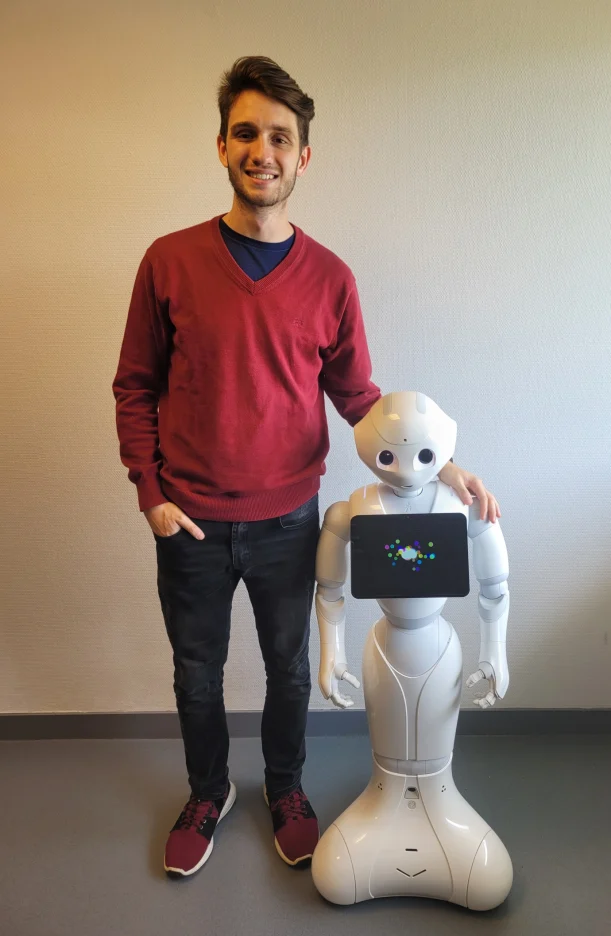

My very first project was to build my own 3D printer. I am a true enthusiast of additive manufacturing and of doing it yourself so I’d rather build my own than buy it.
This printer was built thanks to a large open-source initiative on the internet called RepRap which consist of a site where people from all over the world can find different 3D printer designs of other users and build their own based on them or improve them.
It was a very enriching project which allowed me to learn several skills and acquire knowledge that I still use in my formation as an engineering.
During the first year of my journey at École Nationale d’Ingenieurs de Brest , France I had the opportunity to work on a project which involve Natural Language Processing with my partner Trajano Mena. We worked as part of a team who was participating in a competition called RoboCup@HOME.
The goal was to make the robot capable of passing several challenges which involved computer vision, motion, and human language recognition. In particular, I worked with my partner in the language recognition system where we developed a program written in python that allowed the robot to distinguish when someone started to talk to him and then to interpret the actual intention of the request to perform an appropriate action in response.
A tiny demo is shown in the recording above.

This project was carried out as a project for the subject “Digital Embedded Systems” at École Nationale d’Ingenieurs de Brest .
The goal was to implement a real-time operating system (RTOS) to control the mobile robot in the photo. The basis is to create several “tasks” which control one particular feature of the robot and then thanks to the RTOS run them together as a part of a full system where the decision of which task has to be run, paused or stopped in each instance is made by the system itself in real-time.
Among all the tasks they are found: